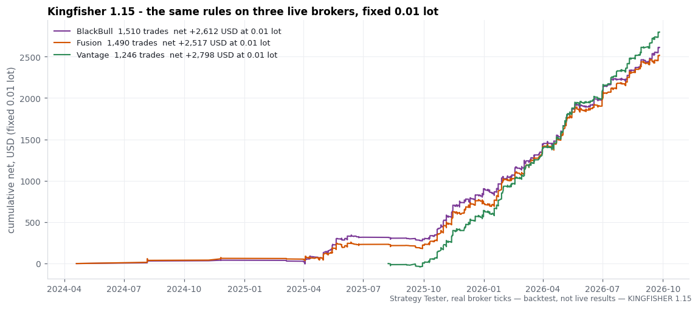
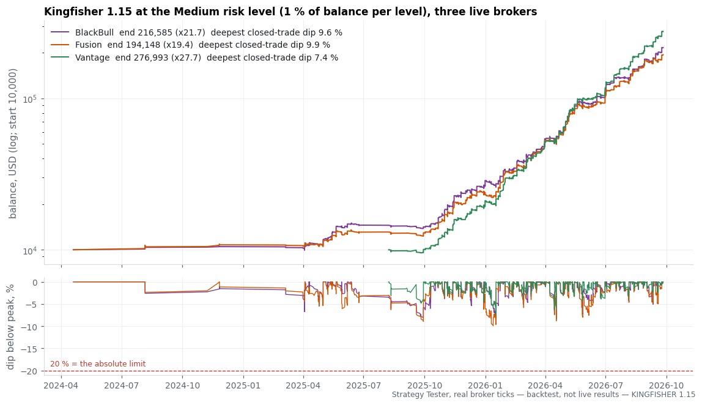
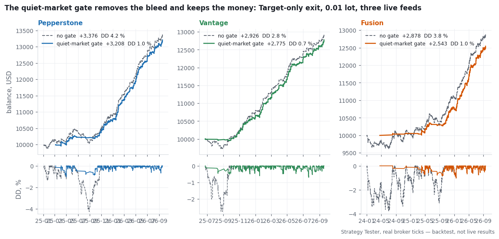
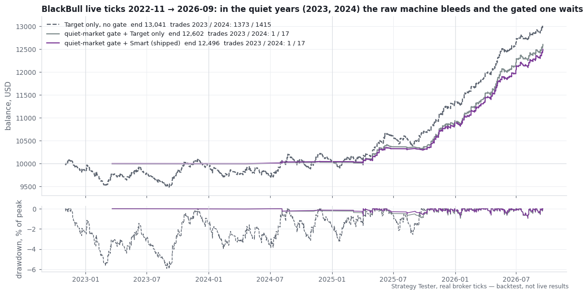
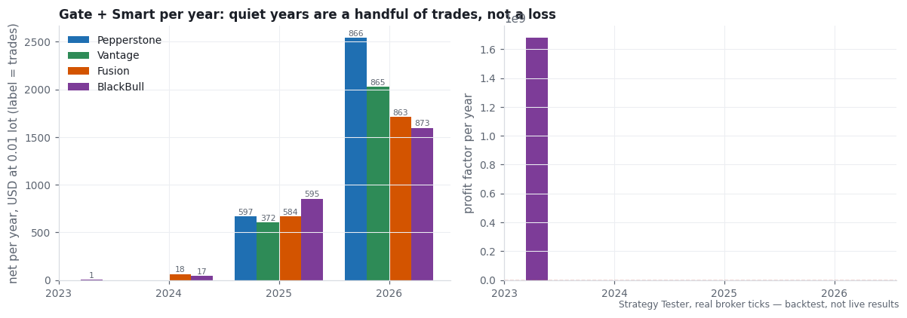
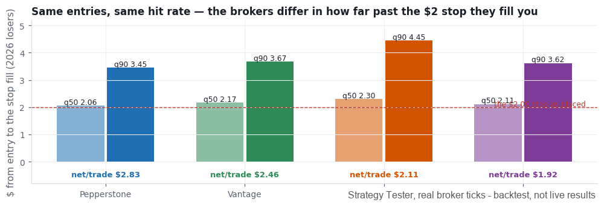
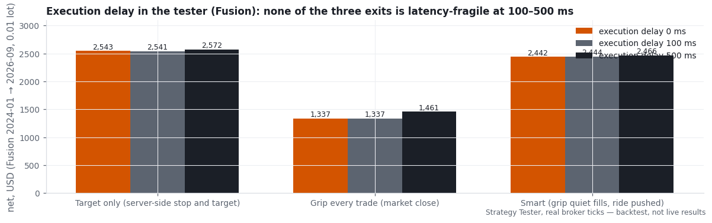

Kingfisher
XAUUSD · M15 · MetaTrader 5 Expert Advisor
View on mql5Read the manualHow it was built
Live signal 2392436 (real account): growth 0.50%, 6 trades, 1 week(s) live, as of 2026-09-28. Details
Headline backtest
Profit factor 2.15 · worst equity drawdown 12.4% · 1,479 trades · return x11.2 on 10,000
Backtest, real ticks, Fusion Markets, 2024-01-02 to 2026-09-19, Medium risk, current defaults. The weakest of the live brokers tested, not the strongest.

Figures on this page come from the MetaTrader 5 Strategy Tester on real broker ticks. They are backtests, not live results.
Kingfisher is an Expert Advisor for MetaTrader 5 (MT5) that trades gold (XAUUSD) with a level-breakout strategy: it enters on the break of the nearest unbroken price level, with a stop loss on every trade. Five hunters run side by side on one chart: four watch the most recent unbroken swing high and swing low on the four-hour bars, one watches the one-hour bars. Each rests a buy stop just inside the high and a sell stop just inside the low, so it is filled at the moment the level gives way.
How a trade is made:
Level. A swing is a bar whose high or low is more extreme than the bars on both sides of it, and which price has not traded through since. The nearest such swing above and below price is the level.
Entry. A stop order rests a small percentage of price inside the level. Orders that are not triggered expire after each hunter's patience (15 to 60 hours) and are renewed while the level is still current.
Risk per trade. Every position opens with a fixed stop loss and take profit in account currency (2.00 and 15.00 per 0.01 lot by default). Position size is computed from the chosen risk level and shared by the hunters that rest on the same level, so one break is one bet, never four.
When it does not trade. Kingfisher places orders only while the stop loss is at most 20 % of the hourly range (ATR). In quiet markets it stands aside; in the four-year test it placed 18 trades across two quiet years. Orders are removed before the weekend.
Exit. On the first tick after a fill the EA reads how fast price arrived. A fast fill rides to the take profit. A slow fill is managed by the Grip: once 1.00 ahead per 0.01 lot, the trade is closed if it gives back half of its best profit.
What the EA does not do: no grid, no martingale, no averaging down, no position without a stop loss, no news trading logic, no files, no DLLs, no external resources.
Settings. One short section, "Start here", is the whole setup: Account type (Personal, Prop firm 2-step, Prop firm 1-step), Strategy settings (Recommended, Classic, Custom), Risk level (Low, Medium, High, Hot, Custom), an optional balance to size on, and a maximum spread in dollars. With Strategy settings on Recommended the tested configuration is used whatever the lower sections say, so a stray edit cannot change it; Custom opens every value that moves a trade - each hunter's level, offsets, stop, target and patience, the gates, the exits - for your own tests. The compiled defaults are the tested configuration; the EA needs no .set file. On a chart that is not gold it loads, says why, and stays flat. The Journal's second line states the lot size your risk level buys at your balance.
Results below are Strategy Tester runs on real broker ticks (100 % history quality), 10,000 starting balance, compiled defaults, and are backtests, not live trading:
- Pepperstone, 2025-01 to 2026-09: growth ×20.6, worst drawdown 5.3 %, profit factor 3.57
- Vantage, 2025-06 to 2026-09: growth ×15.8, worst drawdown 5.9 %, profit factor 3.06
- Fusion, 2024-01 to 2026-09: growth ×11.2, worst drawdown 12.4 % (on this wide-fill feed the Classic setting did better: ×17.3 at 10.2 %)
- BlackBull, 2025-04 to 2026-09: growth x18.8, worst drawdown 8.8 % (version 1.11)
(Medium risk level, the 1.10 default settings; version 1.10 places exactly the same deals as these runs, proved deal for deal.) In 2023 and 2024 gold was quiet and the EA placed few trades: flat years, not losing ones.
Results differ by broker. The stop is a fixed 2.00 per 0.01 lot, so the spread takes a fixed share of it: on the four raw-spread brokers the losers closed 2.07 to 2.34 away from the entry at the median, while on a broker whose gold spread was about 0.24, 8.5 % of the same entries were stopped out within one second of the fill (0.1 to 3.0 % on the raw-spread brokers) and they earned about half as much per trade. Use a raw-spread (ECN) account. The system earned its result in one kind of market — gold moving in large daily bursts — and stands aside in quiet markets rather than trading them. Past performance does not indicate future results. Test on a demo account with your broker before trading real funds.
Prop-firm accounts. Choose the Account type and nothing else. Prop firm 2-step fixes the size at 0.5 % of balance per level (the Low level) for challenges with a 5 % daily and 10 % maximum loss; Prop firm 1-step fixes it at 0.25 % for 3 %/6 % challenges and for any challenge on a standard-spread account. In a simulation that replays the backtest's own days (10,000 paths, challenge rules applied at every trade close), Prop firm 2-step on a raw-spread feed passed a 10 % + 5 % two-step in 98.5 % of attempts (BlackBull, 2023–2026) and 100 % (Vantage, 2025–2026); on a standard-spread feed it passed 73 % and Prop firm 1-step 96 %. This is a statement about tested history, not a prediction. The EA does not read the firm's news calendar, and trades often last seconds to minutes: check the firm's news, weekend and minimum-duration rules. Details and the full table: user manual, chapter 3a.
Simulation on backtest history, MetaTrader 5 Strategy Tester, real ticks, BlackBull / Vantage / OANDA, 2023 to 2026.
Prop-firm rules. A second input group takes your firm's own numbers: daily loss limit (a share of the account size or of the day-start value, counted from balance, equity or the higher of the two), maximum loss limit (fixed or trailing), profit target, best-day cap and a Friday close hour. When a limit is about to be reached the EA closes its own trades, deletes its orders and pauses until the firm's next day (daily rules) or stops for good (maximum loss, target); the Journal names the rule and the equity. The prop account types switch the daily and maximum loss on for you (5 and 10 percent, or 3 and 6); on Personal every rule is off. It is a rule guard, not a guarantee: a price gap can carry a loss past a limit, which is why the EA acts 0.5 percent early by default. User manual, chapter 3b.
Reproducible. Every figure above comes with its exact Strategy Tester settings (user manual, chapter 14): expert, symbol, M15, dates, real ticks, 10,000 deposit, compiled defaults. Example: BlackBull, 2026-07-01 to 2026-09-19, Strategy settings Classic — 284 trades, net 6,576.13, profit factor 1.89, equity drawdown 15.6 %.
Requirements: MetaTrader 5, XAUUSD, a raw-spread (ECN) account, leverage 1:100 or higher recommended, VPS or an always-on PC.
Frequently asked questions
Q: Which broker and account type does Kingfisher need? A: A raw-spread (ECN) account with tight gold spreads is recommended, on a hedging account; netting works too once the resting-margin cap input is set.
Q: What is the minimum deposit? A: 1,000 in account currency at the Low risk level, or 3,000 at Medium.
Q: Which chart and timeframe do I attach it to? A: Any XAUUSD chart - Kingfisher reads the four-hour, one-hour and 15-minute bars itself. The M15 chart is what the testing used.
Q: Which risk level should I start with? A: Start at Low for the first eight live trading weeks, then move to Medium once closed trades on your own broker confirm the demo results.
Q: Does Kingfisher use a grid, martingale or averaging? A: No. Every position opens with its own fixed stop loss and take profit; nothing is added to a losing trade and nothing is averaged down.
Q: Why does it sometimes not trade for days? A: Kingfisher only places orders while the stop loss stays inside its quiet-market gate (at most 20 percent of the hourly range). In a quiet market it stands aside rather than force a trade, so a stretch without a fill is expected, not a fault.
Q: Do I need a VPS, and what happens after a restart? A: Orders rest on the broker's server, but the EA needs to keep running for its exit logic and quiet-market gate, so a VPS or an always-on PC is recommended. After a restart it re-adopts its own open orders and positions by magic number.
Q: Can I backtest Kingfisher myself? A: Yes. It needs no .set file - the compiled defaults are the tested configuration - and the user manual's reproduce chapter gives the exact Strategy Tester settings to reproduce any figure in this listing.
Evidence






